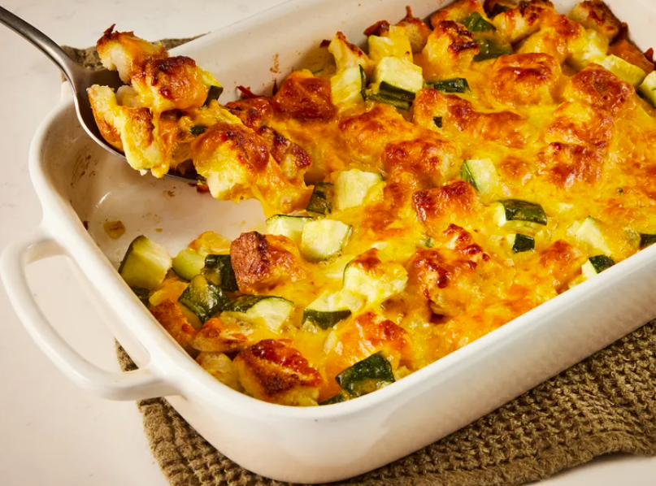

Home
Cheesy Zucchini Casserole

Description
Cheesy Zucchini Casserole is a comforting and flavorful dish that perfectly combines fresh zucchini, melted cheese, and a creamy, savory base. It's an excellent way to use up summer zucchini and makes a delicious side or even a light vegetarian main course.
This casserole is layered with tender slices of zucchini, garlic, onions, and a rich blend of cheeses, often finished with a crispy breadcrumb topping. Whether you're feeding a crowd or just looking for a new way to enjoy your veggies, this dish is hearty, satisfying, and easy to prepare.
Ingredients
- 4 slices bread, cubed
- ¼ cup melted butter
- 2 cups cubed zucchini
- 1 large onion, finely chopped
- 1 large egg, beaten
- 1 teaspoon garlic salt or to taste
- 2 cups shredded Cheddar cheese
Steps
- Gather all ingredients. Preheat the oven to 350 degrees F (175 degrees C).
- Place bread cubes in a medium bowl and pour melted butter over top. Add zucchini, onion, egg, and garlic salt; mix well.
- Transfer the mixture into a 9x13-inch baking dish and top with cheese.
- Cover and bake in the preheated oven for 30 minutes. Uncover the dish and bake for another 30 minutes.